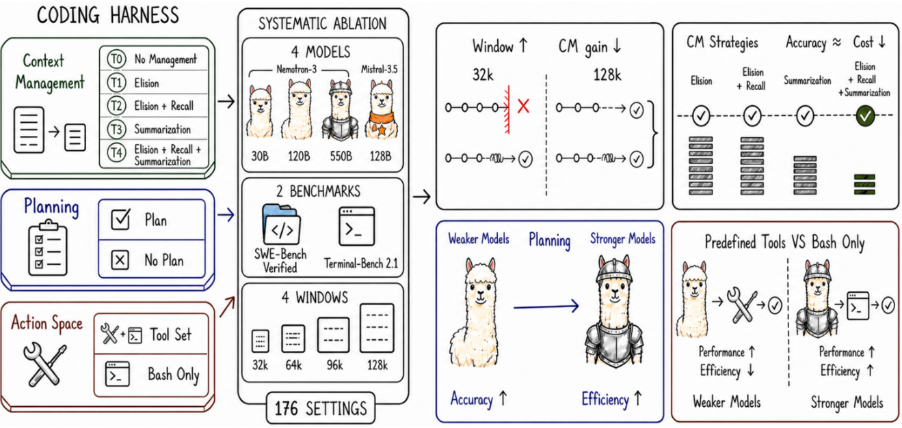
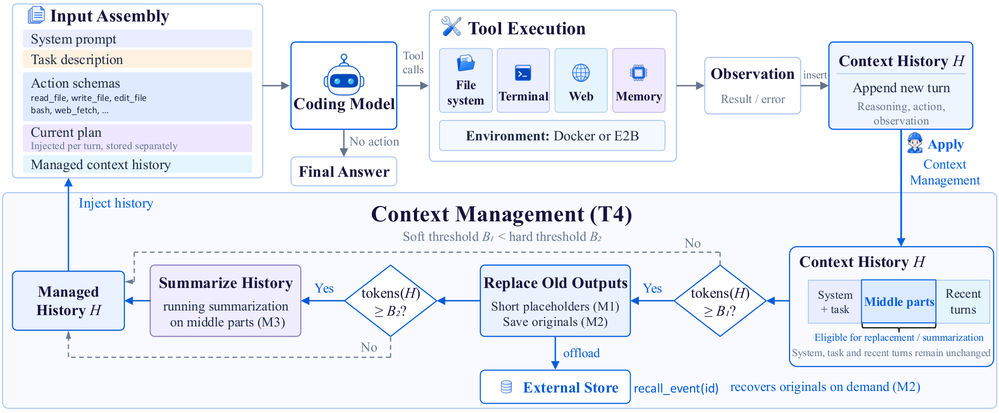

An Empirical Study of Harness Design for Coding Agents: Context Management, Planning and Action Space under Matched Ablations (Zoom)
TL;DR
- Run-Ze Fan, Zihao Zhang, Simin Ma, … Hamed Zamani, Xiaoyang Wang (Zoom with UMass, Emory and UNC collaborators; arXiv 2609.20804) build a deliberately plain ReAct coding harness, freeze its execution loop, and vary exactly three components — context management (five tiers), planning (on/off) and action space (predefined tools vs bash-only) — across four models (Nemotron-3 30B/120B/550B, Mistral-Medium-3.5-128B), four context budgets (32k–128k) and two benchmarks (SWE-Bench Verified, Terminal-Bench 2.1): 176 matched settings with paired McNemar tests.
- Context management is almost entirely an overflow prevention device: the managed-vs-none gap shrinks from 35.7 to 2.7 points on SWE-Bench as the window grows from 32k to 128k, tracking the fall in no-management overflow failures (78.7% → 8.7%). Staging cheap rule-based elision before LLM summarization (T4) gives the lowest cost in 7 of 8 model–benchmark panels at similar accuracy. Making elided content recoverable is dead weight: 56% of settings never call recall, and T2 vs T1 nets −0.36 points.
- Planning and tools are conditional on the model. Planning lifts the weakest model by +11.6 points (it keeps it alive long enough to attempt an edit) but for the strongest models it is a cost saver (−30% cost) via less post-edit verification. Predefined tools scaffold bash-weak models (+15 points for 30B) while bash-only makes the 550B model both better (+3.6/+5.6 points) and 53%/30% cheaper by letting it write bigger, denser edits.
Why this matters
Nearly every harness result in this tracker compares whole systems — Claude Code vs Codex vs Pi vs OpenHands — so a score difference cannot be attributed to any component, and No Universally Best Harness showed the rankings themselves flip across models and tasks. This study is the missing controlled experiment: one harness, one loop, one knob turned at a time, with the model and the context budget as explicit axes. It converts folk knowledge ("compaction helps," "planning helps," "just give it bash") into conditional statements with numbers attached.
For the context-engineering line the tracker follows, the headline is sobering. Most of the accuracy benefit of managing context comes not from better reasoning over a cleaner window but from not dying when the window fills. Once the window is generous enough that unmanaged runs fit, the marginal accuracy benefit nearly vanishes and cost becomes the reason to manage context. That reframes a lot of memory-and-compaction work as an efficiency problem rather than a capability one — consistent with SoL-Pi (tracked today), which searched for harness mechanisms under a token objective and found compaction, observation elision and delegated log reduction.
The core idea
Hold the substrate fixed and estimate the conditional effect of each intervention. The harness is a ReAct loop: each turn assembles the model input, executes emitted tool calls in the task container, and appends the observation to history \( H \). Three components enter at distinct points (Figure 2): planning through an injected plan block (maintained via an update_plan tool and never stored in the transcript), the action space through the exposed tool schemas, and context management through the history the model actually sees. Safety gates, post-edit lint diagnostics and stuck detection are held constant.
Context management composes three mechanisms — elision (M1: replace a stale tool observation body with a stub), recall (M2: store the original externally, expose recall_event), summarization (M3: fold the oldest middle events into a running natural-language summary produced by a tool-free call to the same model) — under a soft and a hard threshold:
where \( W \) is the usable context window; the preamble and a recent window of at least two turns (budgeted at \( 0.3\,W \)) stay verbatim, only the middle region is compacted. The five tiers are T0 (none), T1 (M1), T2 (M1+M2), T3 (M3), T4 (all three, staged), and the paper's "value of context management" at a budget is simply
the success-rate gap between managed tiers and no management (my notation for the quantity they average across models).

Figure 1 from the paper: the study ablates context management, planning and the action space, and reports four conditional effects that depend on context budget, model capability and task type.How it works
Algorithm 1 (T4, per turn) is the core loop of the context policy:
input: history H, soft/hard thresholds B1 < B2, external store S
append this turn's (think, action, observation) to H
if model called recall_event(id): read S[id] back into H # M2
keep preamble + recent window (>= 2 turns) verbatim; M := middle region
if tokens(H) >= B1:
for each bulky tool observation o in M:
S[o.id] := o.body # M2
o.body := stub("[elided: tool=…, id=…, size=…]") # M1
if tokens(H) >= B2:
summary := LLM_summarize(oldest events in M ++ summary) # M3
replace those events with summary
return H
# Tiers 1–3 have one action each and fire at B2; only T4 elides at B1.
Setup. Models are served locally with SGLang in BF16, temperature 0, top-p 0.95, ≤16,384 output tokens per turn, ≤300 steps per task, tool results truncated to 24k characters, up to eight read-only tools in parallel per step. Costs are OpenRouter list prices per 1M input/output tokens ($0.05/$0.20 for Nemotron-3 30B up to $1.50/$7.50 for Mistral). Each model–benchmark pair gets 20 context settings (5 tiers × 4 budgets, planning on, full tools) plus two ablations at T4/128k (planning off; bash-only), i.e. 22 × 8 = 176 settings. Success rates are compared with two-sided exact McNemar tests on task-paired outcomes, Benjamini–Hochberg corrected.
Action spaces. Full: read_file, write_file, edit_file, list_files, glob_files, grep_text, web_fetch, bash (typed schemas, read-before-write checks, automatic lint after edits). Bash-only removes the file/search/web tools and their state tracking, so the comparison is a bundled interface change, which the authors flag.
Trajectory analysis. Every turn is labelled with a workflow phase by an LLM judge (Localize/Reproduce/Fix/Verify on SWE-Bench; Understand/Write Code/Verify on Terminal-Bench), giving the "profiles" that explain how each component changes behaviour.

Figure 2 from the paper: top, the fixed ReAct loop and where planning, the action space and context management intervene; bottom, the staged T4 policy — bulky middle-region tool outputs are stubbed and offloaded above the soft threshold, the oldest middle events are summarized above the hard threshold, preamble and recent turns stay verbatim.Results
Context management = overflow insurance. Averaged across models, the managed–T0 gap on SWE-Bench is 35.7 → 15.9 → 5.5 → 2.7 points at 32k/64k/96k/128k, and 9.5 → 7.5 → 4.8 → 2.8 on Terminal-Bench, while T0's overflow rate falls from 78.7% to 8.7% (SWE) and 61.0% to 12.1% (TB); every managed tier overflows on zero tasks. Trajectory profiles confirm the mechanism: at 32k, unmanaged runs die at a median of 20–30 turns, mostly still in Localize; managed runs extend to 50–180 turns with the same phase ordering. A concrete cell: Nemotron-3 550B on SWE-Bench at 32k goes from 6.4% (T0) to 51.4% (T1).
T4 wins on cost, not accuracy. Accuracy across T1–T4 is similar; T4 has the lowest peak-context ratio at every budget and the lowest mean cost in 7 of 8 panels because cheap early elision handles most pressure before a summarization call is needed (T4 invokes M3 less than T3 and M1 less than T1/T2 at tight budgets).
Recall is unused. Across 32 matched T1-vs-T2 comparisons: 15 better, 14 worse, 3 ties, mean −0.36 points. Of 64 T2/T4 settings, 36 never call recall_event; mean calls per task fall from 0.54 at 32k to 0.007 at 128k, almost all from the 30B model — and its heaviest-use configuration scores 3.4 points below elision alone.
Planning is a capability-dependent knob. At T4/128k, planning adds +11.6 (SWE) and +4.5 (TB) points for Nemotron-3 30B at higher cost: median SWE trajectory rises from 5 to 40 turns, and runs ending without any edit fall from 68.6% to 27.8%. For 550B and Mistral it cuts SWE cost by ~30% and ~32% with −2.0 and −0.4 points, by shortening post-edit verification (550B median 108 → 74 turns). For 120B the sign depends on the benchmark.
Action space crosses over with capability and task type. Full tools help 30B (+15.0 SWE, +10.1 TB): without them 66% of its bash-only Terminal-Bench runs terminate after emitting a call to a tool that no longer exists, and average length collapses from 71 to 15 turns. For 550B, bash-only is better and cheaper (+3.6 / +5.6 points; −53% / −30% cost; 32% / 24% fewer calls), because the shell lets it bundle operations: re-patches per task drop 4.6 → 1.5, the median largest edit grows 18 → 54 lines, create-or-replace writes rise 51% → 76%. Mistral is the boundary case — full tools are worth +23.2 points on SWE-Bench, but bash-only adds +6.7 on the more shell-centric Terminal-Bench, where it already routed 71.9% of workspace actions through bash.
How it connects
- SoL-Pi (tracked today) — the search-based complement. Its ObservationPack is "elision with recall" and its Evidence-Preserving Reducer is delegated summarization; this study says recall is rarely used, SoL-Pi adds a cost gate that decides when compaction pays. Read together they bracket the context-management design space from both ends.
- Pi Dev Notes: Prune+Spill (tracked) — Pi's tool-result pruner plus spill-to-disk is exactly T2; the finding that models rarely recall spilled content is a direct challenge to the "lossless" argument for spilling.
- Agentic Context Management, Less Context, Better Agents (Microsoft, tracked) and Session Constraints — the accumulating evidence that less transcript is fine or better; this paper adds the caveat that the accuracy benefit is mostly about overflow, and Session Constraints is the reminder that summarization silently drops standing rules.
- SKILL.state — the limit case (no transcript at all); this study's "context management extends trajectories without altering behaviour" is consistent with the transcript being mostly ballast.
- No Universally Best Harness and AI4AI at Test-Time: strong-to-weak scaffolding — both anticipate the conditional pattern: structured scaffolds (plans, typed tools) help weak models and tax strong ones.
- Harness Handbook and openJiuwen (tracked) — design-space catalogues that this study's numbers can now populate.
- HarnessTax (tracked today, blog) — an independent 21-pair model×harness analysis reaching the same headline: harness choice moves cost far more than success.
Critical take
The strongest result — context management as overflow insurance — is partly baked in by design: T0 terminates on overflow rather than truncating, so any strategy that avoids termination will look good at 32k. The interesting question, whether smarter compaction improves decisions given survival, is answered only indirectly (managed tiers tie each other), and the answer is "not much" for these models.
The models are the main external-validity limit. Three Nemotron-3 sizes plus one Mistral, none trained with a recall tool or an explicit compaction protocol, so "recall is never used" may say more about these models than about lossless storage; frontier agentic models re-read files and grep their own history constantly. The same applies to the bash-only crossover — the 550B result is compelling, but where the crossover sits for Claude- or GPT-class models is unmeasured. Summarization is done by the model under test at full price; a cheap summarizer would shrink T3's cost disadvantage.
Statistical power is thin where it matters: one run per task at temperature 0, 89 Terminal-Bench tasks, and planning/action-space ablations only at the T4/128k corner rather than factorially. The action-space intervention bundles tool availability with state tracking and lint, so "bash-only is better" is really "this whole typed-tool interface adds overhead for capable models." All of this is stated in the paper's own limitations, which is to its credit.
If you remember three things
- Manage context to prevent overflow and to save money, not to make the model smarter: the accuracy gain from compaction shrinks toward zero as the window grows.
- Stage rule-based elision before LLM summarization (T4) — cheapest at equal accuracy — and don't bother making elided content recoverable unless your model is trained to recall it.
- Planning and typed tools are training wheels: they raise weak models' success and lower strong models' cost (planning) or cost strong models accuracy and money (typed tools vs bash). Pick per model, task type and budget.